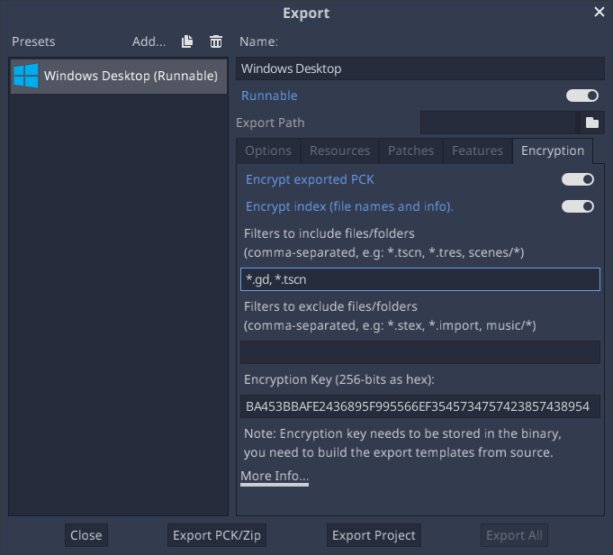

Compiling with PCK encryption key
The export dialog gives you the option to encrypt your PCK file with a 256-bit AES key when releasing your project. This will make sure your scenes, scripts and other resources are not stored in plain text and can not easily be ripped by some script kiddie.
Of course, the key needs to be stored in the binary, but if it's compiled, optimized and without symbols, it would take some effort to find it.
For this to work, you need to build the export templates from source, with that same key.
Warning
This will not work if you use official, precompiled export templates. It is absolutely required to compile your own export templates to use PCK encryption.
Step by step
Generate a 256-bit AES key in hexadecimal format. You can use the aes-256-cbc variant from this service.
Alternatively, you can generate it yourself using OpenSSL command-line tools:
openssl rand -hex 32 > godot.gdkey
The output in
godot.gdkeyshould be similar to:# NOTE: Do not use the key below! Generate your own key instead. aeb1bc56aaf580cc31784e9c41551e9ed976ecba10d315db591e749f3f64890fYou can generate the key without redirecting the output to a file, but that way you can minimize the risk of exposing the key.
Set this key as environment variable in the console that you will use to compile Godot, like this:
export SCRIPT_AES256_ENCRYPTION_KEY="your_generated_key"
set SCRIPT_AES256_ENCRYPTION_KEY=your_generated_key
$env:SCRIPT_AES256_ENCRYPTION_KEY="your_generated_key"Note that the commands suggested above do not persist the variables across terminal sessions.
Compile Godot export templates and set them as custom export templates in the export preset options. If the environment variable is set correctly, the following message is printed at the beginning of compilation:
*** IMPORTANT: Compiling Godot with custom `SCRIPT_AES256_ENCRYPTION_KEY` set as environment variable. *** Make sure to use templates compiled with this key when exporting a project with encryption.
Set the encryption key in the Encryption tab of the export preset:

If performing an export from the command line, before exporting, set the
GODOT_SCRIPT_ENCRYPTION_KEYenvironment variable to the same value as the one used to compile the export templates (SCRIPT_AES256_ENCRYPTION_KEY).Add filters for the files/folders to encrypt. By default, include filters are empty and nothing will be encrypted.
Export the project. The project should run with the files encrypted now.
Troubleshooting
If you get an error like below, it means the key wasn't properly included in your Godot build. Godot is encrypting PCK file during export, but can't read it at runtime.
ERROR: open_and_parse: Condition "String::md5(md5.digest) != String::md5(md5d)" is true. Returning: ERR_FILE_CORRUPT
At: core/io/file_access_encrypted.cpp:103